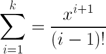

Составить блок-схему вычислительного процесса и написать программу на любом алгоритмическом языке высокого уровня.
№1.Вычислить и вывести на экран сумму k членов ряда ,где x и k- любые целые числа, введенные с клавиатуры:
Сумма первых членов ряда Σ i+1/(i-1)! равна
Чтобы не вычислять факториал в знаменателе для каждого члена ряда,
заметим что начиная со второго, каждый член
ряда ak выражается через предыдущий: ak
= ak-1 * х / (к-1).
Заметим также что 0! =
1, и поэтому a1 = х2/0! =
x2
// Значения переменных берем из полей ввода
var x = parseInt(document.forms["task2form"].x.value, 10);
var k = parseInt(document.forms["task2form"].k.value, 10);
// переходим к решению
var a = x * x // первый член ряда
var s = a // сумма первых к членов ряда при к = 1
for (var i = 2; i <= k; i++)
{
a = a * x / (i-1); // для каждого i находим i-й член ряда
s = s + a; // На каждом шаге цикла S - сумма i членов ряда
}
printTask2Result(s); // Выводим результат на экран
Составить блок-схему вычислительного процесса и написать программу на любом алгоритмическом языке высокого уровня.
№1. Вычислить Z = 0,2X - Y2, где X – минимальный элемент массива A(25), Y – максимальный элемент массива B(30).
Массивы А и В заполняются случайными целыми числами в заданном диапазоне значений.
Массив A: .
Массив B: .
X = ,Y = .
Z =
// Значения границ диапазонов для заполнения массивов берутся из полей ввода.
var form = document.forms["task3form"];
var a_bottom_limit = parseInt(form.a_bottom_limit.value, 10),
a_top_limit = parseInt(form.a_top_limit.value, 10),
b_bottom_limit = parseInt(form.b_bottom_limit.value, 10),
b_top_limit = parseInt(form.b_top_limit.value, 10);
// Заполняем массивы случайными целыми числами в заданных диапазонах значений
var a = new Array(25);
var b = new Array(30);
for (var i = 0; i < a.length; i++)
{
a[i]= Math.floor(Math.random() * (a_top_limit - a_bottom_limit + 1)) + a_bottom_limit;
}
for (var i = 0; i < b.length; i++)
{
b[i]= Math.floor(Math.random() * (b_top_limit - b_bottom_limit + 1)) + b_bottom_limit;
}
// x - минимальный среди первых i элементов массива a
var x = a[0];
for (var i = 1; i < a.length; i++)
{
if (a[i] < x)
{
x = a[i];
}
}
// y - максимальный среди первых i элементов массива b
var y = b[0];
for (var i = 1; i < b.length; i++)
{
if (b[i] > y)
{
y = b[i];
}
}
// Вычисляем и выводим на экран результат
var z = 0.2*x - y*y;
printTask3Result(a,b,x,y,z);